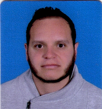

JORGE ENRIQUE CASTRO

4 DE NOVIEMBRE 1987
CELULAR: 3118639960
VIDA UNIVERSITARIA
El proceso antes de la vida universitaria fue obviamente graduarme del colegio donde fue una etapa importante de mi vida ya que gracias a él desarrolle gran parte de lo que soy ahora como persona y en donde encontré personas que han sido significativas en la parte de mis pensamientos como lo fueron docentes y compañeros, también acompañando de mi familia que ha sido un apoyo en mi formación como persona inculcándome valores, responsabilidad y respeto.
Respecto a la universidad antes de entrar a ella tenía temor, incertidumbres y ansiedad de saber cómo era esa vida ya que por anécdotas de compañeros no tenía una imagen buena ya que los veía tan despreocupados de su vida y cambiando de manera significativa sus pensamientos y con un carácter un poco fuerte de lo que los conocía diciendo que la universidad era lo que uno quisiese ser, claro está que en esos momentos no entendía el porqué de esa actitud ni a que se referían con esas palabras. A parte de eso mis expectativas crecían en cuanto a si me gustaría la carrera que escogí para mi futuro, si me adaptaría a las personas que fuese a conocer como docentes y compañeros de estudio o todo lo referente a la universidad. Sabiendo por otro lado lo inculcado en el colegio de que la universidad necesitaba un mayor grado de autocontrol y responsabilidad en cuanto a las libertades brindadas por esta y a la manera en que tomaría decisiones que podrían afectar el rumbo que quisiese ser.
Al referirme al rumbo es con las acciones tomadas en el momento queriendo decir con esto a las libertades que ofrecen los campos universitarios y la manera de hacer o no las cosas como, en vez de hacer un trabajo ir a recrearme en otras actividades como jugar para integrarme con los compañeros y dejar acumulados los trabajos para después sentir el agobio del tiempo que no perdona la inexperiencia del hábito de estudio.
Estas eran mis expectativas antes de entrar la universidad. Pero ya estando en ella me doy cuenta que se puede llevar un equilibrio entre las responsabilidades que esta requiere como la vida social que manejas ya que a mi criterio se expandió, conociendo a diversos personajes dejándome bastantes puntos de vista los cuales podré aprovechar en el día a día o en un futuro, como también desarrollando las actividades impuestas por los docentes que los considero retos diarios que me servirán para poder satisfacer las necesidades de mis jefes o por que no mis empleados. Por otra parte encontré la gigantesca confianza que me han brindado mis padres ya que más que mi temor era de ellos ya que la libertad que presta la universidad es difícil convivir con ella porque en tan solo un parpadeo puede uno caer en tentaciones no tan agradables y haciendo que estas cambien tu manera de ser y si haces un análisis sobre ti puede que te extrañe la manera en que actúas en la actualidad, sin embargo esas tentaciones las he superado bastante bien y la confianza brindada por mis padres no ha sido defraudada. En estos momentos haciendo un balance acerca de la universidad encuentro que he podido adaptarme bastante bien ya que la relación que llevo con los docentes y compañeros de estudio es muy bueno a parte del hábito de estudio creado qué es el que me tiene donde estoy ya que me ha llenado de sabiduría intelectual como espiritual y en proyección a crecer más, entonces mi balance lo considero positivo dadas estas explicaciones.7
Ya para terminar me veo como en gran profesional cumpliendo a cabalidad los retos propuestos por lo que una empresa o la mía imponga en el camino siendo un estratega, un líder, un crítico, un analítico y por sobre todo un innovador ya que pienso que la ingeniería de sistemas se trata de esto último, cumpliendo con eficiencia y eficacia todo lo impuesto.